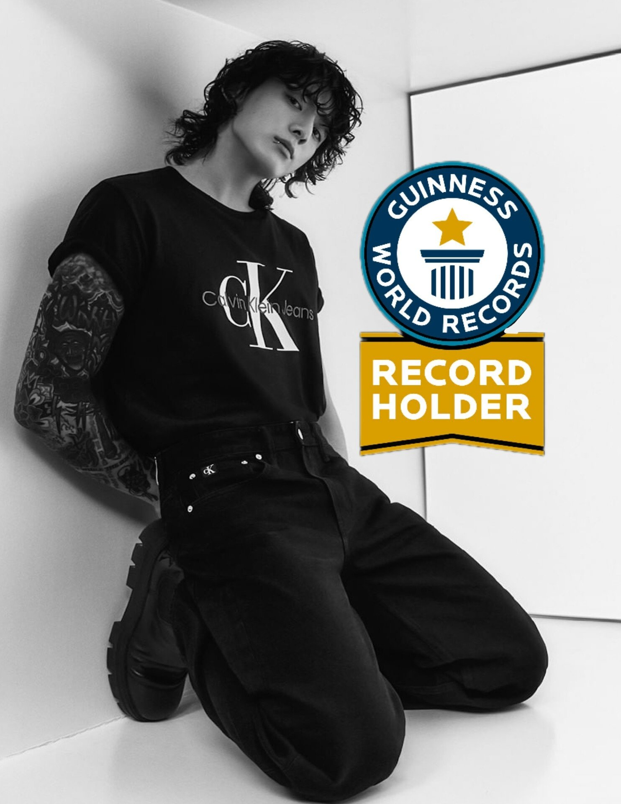

LOGROS |
|
 |
#1 en Billborad HOT100“Seven” de Jung Kook , con Latto , llega al número 1 en la lista de canciones Billboard Hot 100 . Jung Kook se convierte en el segundo miembro de BTS con un líder Hot 100, luego de que “Like Crazy” de Jimin se lanzara en el No. 1 en abril. |
|  |
1000 millones de reproducciones en SpotifySegún informaron desde la institución de récords, Jung Kook se transformó en el solista masculino de k-pop en alcanzar más rápido las mil millones de reproducciones en Spotify, lo que fue logrado con solo tres canciones. El importante hito se cumplió el 27 de marzo de este año, con las pistas "Stay Alive" (Prod. SUGA of BTS), "Left and Right" (en colaboración con el estadounidense Charlie Puth, que además cuenta con dos remixes y una versión instrumental) y "Dreamers" (parte de la banda sonora de la Copa Mundial de la FIFA 2022). Al integrante de BTS le tomó tan solo 409 días lograr este récord, lo que fue también fue anunciado por la cuenta de Guinness World Records a través de Twitter. |
 |
#1 más visto en la historia de TikTokJungkook es el artista solista número 1 más visto en la historia de TikTok. Jungkook es el primer artista en solitario del mundo en superar los 199 mil millones de visitas en su hashtag individual de TikTok, en la aplicación y plataforma de redes sociales más popular del mundo.Tiene el récord de la primera y única persona en el mundo en superar los 158 mil millones de visitas en su hashtag individual en la historia de TikTok. Es actualmente la persona número 2 más vista del mundo en TikTok, después de Messi (futbolista argentino). (Jungkook mantuvo el récord como la persona número 1 más vista del mundo en TikTok por su hashtag individual durante 27 meses). Obtuvo más de mil millones de visitas en su hashtag TikTok en solo 1 día, luego de su actuación en la Copa Mundial de la FIFA. Tiene el audio de TikTok más usado para un artista solista de K-Pop en la historia de TikTok. |
Transmisión en vivo más vistaTiene el récord de la transmisión en vivo más vista, más gustada y más comentada en la historia de VLive, con más de 22 millones de visitas en tiempo real. |
|